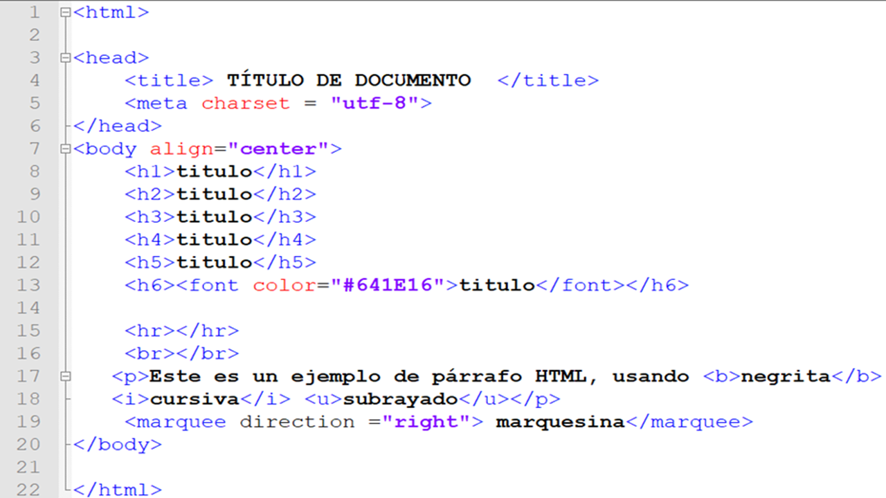

Etiquetas
 |

|
Etiquetas y su función
- Las etiquetas HTML son pequeños bloques de código, que indican al navegador como debe
interpretar el contenido recogido entre dichas etiquetas. Por ejemplo, si queremos «pintar» un
párrafo de texto, hay una etiqueta especifica para que el navegador interprete ese texto como un párrafo.
Estas etiquetas cuentan además con atributos que podemos añadir y que en sí, pueden determinar como será el
comportamiento específico que tendrá la etiqueta.
- Las etiquetas HTML comienzan siempre con el símbolo «<» y finalizan con el símbolo «>». Entre medias de estos
dos símbolos irá el nombre de la etiqueta que queremos que el navegador interprete.
- Todas las etiquetas HTML están compuestas por una etiqueta de apertura, y una etiqueta de cierre. Aunque hay
excepciones, como por ejemplo la etiqueta para cargar una imagen que son llamadas etiquetas huérfanas, ya que
solo tienen etiqueta de apertura.
- Las etiquetas de cierre se construyen con una barra «/» justo antes de la propia etiqueta y los símbolos «<»
y «>». Resumiendo, si queremos «pintar» un párrafo en la página web, abriremos con la etiqueta de apertura de
párrafo «p», y cerraríamos con la etiqueta de cierre «/p».